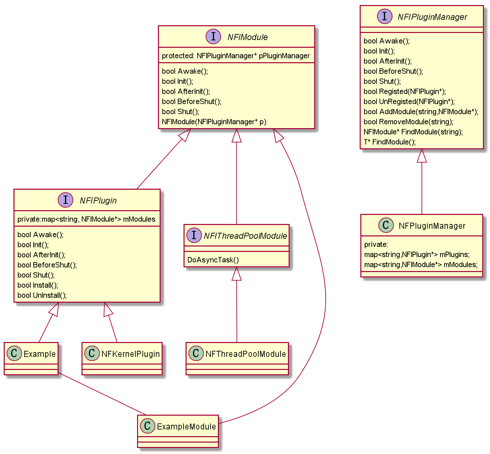

NoahGameFrame是一个c++开发的开源游戏服务器框架，架构的一些设计理念来自ogre和bigworld。
据维护者ketoo介绍有墨麟集团开发的<<全民无双>> 3D ARPG 手游是使用NoahFram开发的。
我个人认为这个框架最大的优点是代码结构简单易于维护，使用的都是标准c++语法看代码不累有条理。
本章节主要来介绍主题框架部分内容，包括主要的插件逻辑、模块结构等。
NoahGameFrame版本和IDE
- github 版本
- 编译工具 vs2019
主要的类图

从uml类图可以看出来，插件的和插件逻辑模块都是继承NFIModule接口，
NFIModule都传入一个NFIPluginManager，
因为所有的模块都会注册到NFIPluginManager中，
所以插件中的模块如果需要别的插件的模块只需要调用NFIPluginManager的
FindModule函数就可以了，基本的使用方法就是这样。分析流程
主要的文件
- NFServer.cpp
- NFPluginServer.cpp
- NFPluginManager.cpp
- NFKernelPlugin.cpp
- NFThreadPoolModule.cpp
- NFCelModule.cpp
代码流程分析
main入口函数在NFServer.cpp模块，函数定义了NFPluginServer服务器列表，
根据main的参数情况来区分是启动全部服务器还是启动单个服务器，这里主要有三个功能：
第一、设置注册插件的回调函数NFPluginServer->SetMidWareLoader,
接着执行初始化函数NFPluginServer->Init
第二、一个while主线程，执行帧循环NFPluginServer->Execute
第三、程序关闭前的清理动作执行NFPluginServer->Finalize(所有插件执行BeforeShut,Shut,Finalize)
接下来每个函数展开来分析
NFPluginServer->Init函数
- 打印logo
- 创建NFPluginManager对象，该对象的指针会转递给所有注册的模块
- 处理控制台消息事件ProcessParameter
- 加载xml配置文件获得所有配置的插件名称
- 执行SetMidWareLoader注册的回调函数进行插件注册(一般是业务的插件在这里优先注册)
- 根据xml获取的插件名称进行插件注册(先进行static插件的注册，再根据配置文件中不存在的插件再卸载)
主要代码实现
- 1.CREATE_PLUGIN(pPluginManager, className)
1
2
3
NFIPlugin* pCreatePlugin##className = new className(pManager);\
pManager->Registered( pCreatePlugin##className ); - 2.pPluginManager->Registered(NFIPlugin* pPlugin)
1
2
3
4
5
6
7
8
9
10
11
12
13
14void NFPluginManager::Registered(NFIPlugin* plugin)
{
const std::string& strPluginName = plugin->GetPluginName();
if (!FindPlugin(strPluginName))
{
mPluginInstanceMap.insert(PluginInstanceMap::value_type(strPluginName, plugin));
plugin->Install();
}
else
{
std::cout << strPluginName << std::endl;
assert(0);
}
} - 3.plugin->Install
这里就拿NFKernelPlugin来举例说明
1
2
3
4
5
6
7
8
9
10
11
12
13
14
15
16
17
18
assert((TIsDerived<classBaseName, NFIModule>::Result)); \
assert((TIsDerived<className, classBaseName>::Result)); \
NFIModule* pRegisterModule##className= new className(pManager); \
pRegisterModule##className->strName = (#className); \
pManager->AddModule( #classBaseName, pRegisterModule##className );\
this->AddElement( #classBaseName, pRegisterModule##className );
void NFKernelPlugin::Install()
{
REGISTER_MODULE(pPluginManager, NFISceneModule, NFSceneModule)
REGISTER_MODULE(pPluginManager, NFIKernelModule, NFKernelModule)
REGISTER_MODULE(pPluginManager, NFIEventModule, NFEventModule)
REGISTER_MODULE(pPluginManager, NFIScheduleModule, NFScheduleModule)
REGISTER_MODULE(pPluginManager, NFIDataTailModule, NFDataTailModule)
REGISTER_MODULE(pPluginManager, NFICellModule, NFCellModule)
REGISTER_MODULE(pPluginManager, NFIThreadPoolModule, NFThreadPoolModule)
REGISTER_MODULE(pPluginManager, NFIELOModule, NFELOModule)
} - 3.pPluginManager->Awake
- 4.pPluginManager->Init
- 5.pPluginManager->AfterInit
- 6.pPluginManager->CheckConfig
- 7.pPluginManager->ReadyExecute
NFPluginServer->Execute函数
- pPluginManager->Execute这个函数会使用try catch打印报错的调用栈,不能因为个别原因造成程序崩溃
1
2
3
4
5
6
7
8
9
10
11
12
13
14
15
16
17
18
19
20
21
22
23
24
25void NFPluginServer::Execute()
{
__try
try
{
pPluginManager->Execute();
}
__except (ApplicationCrashHandler(GetExceptionInformation()))
{
}
catch (const std::exception & e)
{
NFException::StackTrace(11);
}
catch (...)
{
NFException::StackTrace(11);
}
}
NFPluginServer->Finalize函数
- pPluginManager->BeforeShut
- pPluginManager->Shut
- pPluginManager->Finalize
1
2
3
4
5
6
7
8
9
10
11
12
13
14
15
16
17
18
19
20
21
22
23
24
25
26bool NFPluginManager::Finalize()
{
PluginInstanceMap::iterator itInstance = mPluginInstanceMap.begin();
for (; itInstance != mPluginInstanceMap.end(); itInstance++)
{
SetCurrentPlugin(itInstance->second);
itInstance->second->Finalize();
}
////////////////////////////////////////////////
PluginNameMap::iterator it = mPluginNameMap.begin();
for (; it != mPluginNameMap.end(); it++)
{
UnLoadPluginLibrary(it->first);
UnLoadStaticPlugin(it->first);
}
mPluginInstanceMap.clear();
mPluginNameMap.clear();
return true;
} - pPluginManager = nullptr(智能指针自动释放内存)
结尾
启动流程和插件模式都比较简单，大家看一下都可以理解。不过这个版本的代码还没有加上有效的退出程序代码，
所以程序退出是比较暴力的。一些清理工作都无法正常完成。类图是我自己剥离了主框架代码写的,可能有一些差异。